Let's suppose that as a child, you had two goldfish that you kept in a tank on your kitchen counter. When you first
bought them, they were rather small, and could comfortably swim around in such a confined habitat. However, as the
years passed, these goldfish grew larger and larger, until they could no longer exist comfortably in the increasingly
stifling tank. At this point, your mother suggested that you move them from the kitchen to the small pond in your
backyard. With some sadness, you complied, and much to your delight, the two original fish laid eggs and the
previously bereft pond bloomed into a goldfish utopia.
Many years later, in an entirely normal and certainly not contrived flash of curiosity, you decide that you wish to
understand exactly what caused your goldfish population to grow as they did. Fortunately, you were a creepy little
science nerd, and every time a new generation of fish was born into that scummy pond, you counted them all up and
wrote the total in your journal. Looking back at this data, you see the following:
| Generation |
Population size |
| 1 |
2 |
| 2 |
4 |
| 3 |
7 |
| 4 |
11 |
| 5 |
16 |
| 6 |
19 |
| 7 |
20 |
You notice that although the population growth starts off rather vigorously, after the fifth generation, the goldfish
seem to have settled their numbers at around twenty. In fact, checking the pond today, there seem to be roughly the
same number of fish as there were back when you stopped keeping track in your journal. To assure yourself of this
conclusion, you sketch out a quick graph of the pond's goldfish population by generation:

It certainly seems that your assessment was correct! At first, the population grows rapidly, but then it seems to hit
a wall at which it cannot increase further. 'Neat, I guess,' you think, and then go off to browse reddit because,
honestly, who cares about the growth of a goldfish population in a pond?
Okay, so that's enough with the stupid storytelling. What I was trying to do in the paragraphs above was illustrate an
important (and perhaps obvious) fact about modelling population dynamics in nature (or ponds): growth is NOT
rampantly exponential. It's pretty easy to understand why this is true. The world that we live in has a finite supply
of resources. Whether we are talking about the global human population or goldfish in a backyard pond, there's only
so much food and space to share before we (or the fish) become starved and stifled. Of course, before we reach this
resource ceiling (so to speak), there's very little to stop a population from booming--providing the hopeful
assumption that no big predators are out there eating many of us. This is why the goldfish seemed to be doing so well
for the first five generations, before their numbers tapered off at twenty.
The S-curve
It seems that many examples of population growth follow a shape similar to that of our goldfish population. (Does it
not seem that way? Check out these:
New York City
and
many others.) The
next question (this being a math post, after all) is how we might use an equation to model the shape of these curves.
What type of equation would both express the initial quasi-exponential growth of a population and the subsequent
tapering off as that population reached carrying capacity?